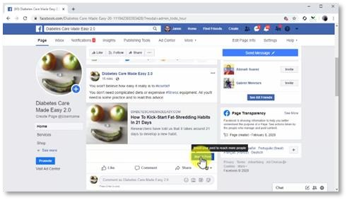
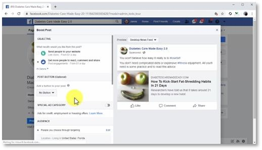

A well-composed, well-optimized marketing post on Facebook can generate a ton of engagement quickly, at no cost. Yet, the number of people using the platform that you won’t reach organically is still astronomical when you think of it. And let us tell you, you don’t want to miss them! But to able to reach those extra eyeballs, you will need to boost your post, with a paid promotion. The good news is that you can easily do it with just a few clicks, and in this lesson, we are going to show you the right way to do it.
Getting Started
You can promote a page post directly from your Facebook page, hassle free. And all you have to do to get started is to go to your page, to locate the post that you are going to promote, and to click on the “boost post” button. A “boost post” window will appear on screen, and you can start setting it all up. This is easier than it looks, you’ll see!
Setting Up The Promotion
Start by selecting your “objective”, which is the result you want to get from promoting your post. Because the objective of your post is to generate reactions from users to build your presence on Facebook, let’s select “get more people to react, comment, and share” as the objective. You can add a “post button”, which is a call-to-action button for your post, but this is optional.
In this case, a CTA button can divert attention from the post directly to the link, so let’s click on the post button menu and select “no button”.

This will encourage users to scan all content in the post before clicking on the link. This also leaves more post real estate to the link preview, which looks way better on the timeline! Let’s now move to the “audience” section. Here you are going to select “people you choose through targeting”, and to click on the “edit” button. Next, you are going to select the “gender”, the minimum and top “age” of your audience, and your “locations”. Next, enter a keyword that best describes your potential audience into the “detailed targeting” field, and select a “detailed targeting” criteria from the menu. This will help you to reach people more easily according to interests and behaviours. You can click on “save” to save this configuration and continue. Now you are going to scroll down and make sure that “automatic placements” is activated. When this option is active, promoted posts will show on Facebook and many other placements in the Facebook network, automatically.
Now move to the “budget and duration” section. Here you are going to select a duration first, using the “days” menu. Next, you are going to enter the amount of money you want to spend to promote your post into the “total budget” field. Here we recommend that you enter a total of $5 to $10 to test your promotion first. You can then increase this amount. You can see the “estimated reach” below. This is the number of people that will potentially see and interact with your post according to your total budget and duration.
Launching The Promotion
Lastly, you are going to select the currency that you are going to use to pay for your ads in the “payment” section. You can preview your ad in the preview window to the right before you launch your ad. And, once you are ready to launch your ad, you will simply have to click on the “boost” button. Your post will start showing between 5 to 15 minutes after launch. And that’s it!
An easy, affordable way to reach more people with your Facebook marketing posts!